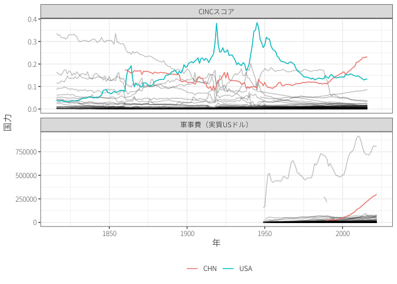
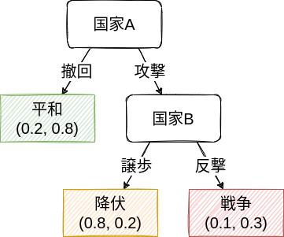
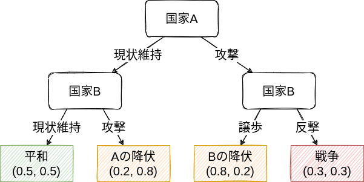

軍事力と安全保障
国際公共政策学
はじめに
戦争を回避する伝統的手段は軍事力
- 現状変更勢力にとっての戦争の利益を減らす\(\leadsto\)利害対立の（表面的）解消
- 実際の戦争の利益は分からないが、議論を整理できる。
\[ \begin{split} &\textrm{現状変更勢力の戦争の利益} \\ &= \textrm{勝利したときの財の価値} \times \underbrace{\textrm{勝利確率}}_{-} - \underbrace{\textrm{戦争費用}}_{+} \end{split} \]
バランシング：軍事力の強化\(\leadsto\)現状変更勢力に対する抑止力の向上
- 拒否的抑止：戦争で勝利する確率を低下
- 懲罰的抑止：戦争で被る費用を増加
バランシングの方法：一国の軍備拡大（内的バランシング）、同盟（外的バランシング）
- 一方で、強力な現状変更勢力の要求に従うことを宥和やバンドワゴンと呼ぶ(Schweller 1994)。
本当に軍事力を高めれば戦争は回避できるのか？
1 軍備拡大と平和
1.1 パワーの分布と平和
パワーの分布と平和や国際社会の安定性の関係についてはいくつかの仮説がある。
- 勢力均衡 (balance of power) ：国力が均等に近いと戦争で勝利する確率が減る(Waltz 2010)。
- 勢力優位 (preponderance of power) ：圧倒的国力を持つ国がいると、他の国は挑戦しなくなる。
- 権力移行 (transition of power) ：台頭国 (rising power) と衰退国 (declining power) の間で戦争は起こりやすい。
現状の利益配分が国力の分布を反映\(\leadsto\)戦争の回避
- この場合、どちらの国も現状を変更しようと思わない。
1.1.1 パワーの変動
パワー変動が急速\(\leadsto\)コミットメント問題\(\leadsto\)衰退国による予防戦争 (preventive war)(Powell 2006)
- 台頭国が現時点で現状維持を求めても、将来は違うかもしれない。
パワーの変動が緩やか\(\leadsto\)台頭国が現状に不満\(\leadsto\)現状変更の要求(Gilpin 2022)
- 経済成長率の乖離は（相対的な）国力の変動を招きやすい。
- パワーの変動が常に戦争を引き起こしたわけではない（例、イギリスとアメリカの覇権交代）
\(\leadsto\)利益の配分と国力の配分が一致するように抑止力を高める・交渉を行うべき。
- 弱小国は大国に対して譲歩すべき？
1.2 抑止の信憑性
軍備拡大や動員\(\leadsto\)相手の戦争の利益の減少＆自国の抑止の信憑性の向上(Fearon 1997)
- ロックイン：戦争の勝利確率の上昇・費用の低下\(\leadsto\)戦争の利益の拡大\(\leadsto\)譲歩せず
- 埋没費用 (sunk cost)：あらかじめ (ex ante) 費用を支払う\(\leadsto\)反撃の決意が高いことを伝達
- 一度行ってしまうと、費用を取り戻すことができない。
- 戦う決意のない国は、そのような無駄な出費をしない。
ロックイン効果
国家Bにとって戦争の利益が0.1の場合と0.3の場合でどのように異なるのか？


軍備拡大や動員\(\leadsto\)威嚇の信憑性を高める＆戦争の可能性を高める(Slantchev 2003)。
- 防衛国が挑戦国になる？
- コンコルド効果：埋没費用のために不利益な行為を継続する現象
1.3 抑止と安心供与
第一撃における優位 (first-strike advantage) \(\leadsto\)コミットメント問題\(\leadsto\)先制攻撃 (preemptive attack)(Powell 2006)
第一撃における優位
先制攻撃をした場合の利益は0.8で、先制攻撃をされた場合の利益は0.2であるとすると、どのような結果になるか？

- 攻撃的兵器のほうが防御的兵器よりも優位\(\leadsto\)第一撃における優位
- 攻撃・防御バランス：軍事力が攻撃的であるか防御的であるか
- 防御的兵器\(\leadsto\)安心供与
- ある兵器が攻撃的であるか防御的であるかを（外部から）判断できるのか？
抑止力を高めるための方策\(\leadsto\)第一撃における優位\(\leadsto\)安心供与に失敗するかも。
- 20世紀初頭のドイツ：フランスとロシアに挟まれており、二正面作戦を遂行する能力はなかった。
- シュリーフェン・プラン：まずはフランスを電撃的に攻撃し、その後にロシアと対決する計画。
- ロシアは広大で動員に時間がかかる\(\leadsto\)その間にフランスと戦う。
- ロシアが動員を始める\(\leadsto\)ドイツが第一撃における優位を確保できる時間は少ない。
- ロシアが動員したという情報を得た時点で、ドイツはフランスとの開戦を決定する。
なかなか停戦や和平が上手くいかないのも、コミットメント問題のせいと言えそう。
1.4 安全保障のジレンマ
他国が攻撃する意図や能力を持っているかどうかが分からない\(\leadsto\)安全保障のジレンマ(Jervis 1978)
- たとえ、国家Aが防衛的意図を持って軍備拡大を行ったとしても、国家Bは攻撃的意図を持っていると誤認するかもしれない。
- その場合、国家Bも防衛的意図を持ってバランシングをするが、国家Aは攻撃的意図を持っていると判断するかもしれない。
- 最終的には軍拡競争となり、安全保障のために行った政策の結果として安全保障環境が悪化してしまう。
安全保障のジレンマ（シナリオ1）
- 互いに軍備拡大をしなかった場合は国力が均等であるとして0.5の利益を得る。
- 互いに軍備拡大をした場合は国力は均等であるが、軍事費として0.2の費用を支払う。
- 一方が軍備拡大をして、他方がしなかった場合、前者は国力が高まり0.8の利益を得るが0.2の費用を支払う。
- 後者は軍事費を支払わないが、国力が弱まり0.2の利益を得る。

安全保障のジレンマ（シナリオ2）
- 互いに軍備拡大をしなかった場合は国力が均等であるとして0.5の利益を得る。
- 互いに軍備拡大をした場合は国力は均等であるが、軍事費として0.2の費用を支払う。
- 一方が軍備拡大をして、他方がしなかった場合、前者は国力が高まり0.8の利益を得るが0.4の費用を支払う。
- 後者は軍事費を支払わないが、国力が弱まり0.2の利益を得る。
- 本当に相手も軍拡を望まない国なのかは分からない。
スパイラル・モデル：軍拡競争\(\leadsto\)ロックイン効果\(\leadsto\)戦争？
- 憲法9条の改正はどのようなメッセージなるのか？
1.5 核抑止
軍事力による抑止の究極的な形としての核抑止 (nuclear deterrence)
- 核兵器国の戦争の勝利確率を過大にする\(\leadsto\)反撃する信憑性を高める。
- 非核兵器国の戦争による被害を過大にする\(\leadsto\)戦争の利益が小さいことを知らしめる。
核による非核兵器国への抑止
核兵器によって攻撃を受けると-1の利益を得る。

一方で、核兵器国は核による威嚇で譲歩を引き出せるので、核兵器国同士では互いに核兵器の使用を抑止しようとする。
1.5.1 相互確証破壊
相互確証破壊 (mutual assured destruction: MAD)：核攻撃に対して核報復
相互確証破壊
互いに核攻撃を行った場合、被害を受けるが、相手国にも被害を与えることができるので0の利益を得る。

相互確証破壊\(\leadsto\)本当に全面核戦争を行う決意に信憑性
相互確証破壊の失敗1
互いに核攻撃を行った場合、全面核戦争に至るため、-2の利益を得る。
- 第二撃能力：ICBM（移動式、サイロ）、SLBM、戦略爆撃機など運搬手段を多様化\(\leadsto\)核兵器による反撃能力を確保
- 瀬戸際外交 (brinksmanship) ：自ら危機をエスカレート\(\leadsto\)自動報復や偶発的な核攻撃の可能性(Schelling 2008, 2018)
- 核危機はチキンゲームであると捉えることができる。
- 狂人理論 (madman theory) ：合理的に判断できない（核戦争を辞さない）と相手に思わせる。
全面核戦争の際には十分な被害を受けることを確保しないといけない。
相互確証破壊の失敗2
国家Bはミサイル防衛システムによって国家Aの核兵器を迎撃できる。
- 迎撃ミサイルの開発や配備をあえて制限する。
- 弾道弾迎撃ミサイル制限条約 (Anti-Ballistic Missile Treaty: ABM条約)がアメリカとソ連の間で1972年に発効したが、2002年にアメリカは脱退した。
\(\leadsto\)核兵器を持っていれば安心という単純なものではない。
1.5.2 核の不使用
核の先制不使用 (no first use) ：核兵器で攻撃されない限り核兵器で反撃しないという政策
- 核兵器国同士であれば、相互確証破壊が成り立つのであれば現実的な選択肢
- 安定・不安定パラドックス (stability-instabilty paradox)：核戦争に至らないという確信\(\leadsto\)通常戦争の可能性が高まる？(Jervis 1979)

しかし、現実には、核兵器国同士の戦争は中国とソ連、インドとパキスタンのみ
\(\leadsto\)通常戦争がエスカレートし、偶発的に核戦争に至るかもしれない可能性が、核兵器国同士の通常戦争も抑止？
消極的安全保証 (negative security assurances)：核兵器国が非核兵器国に対して核攻撃を行わない政策
- 核兵器国と非核兵器国の間であれば、非核兵器国は核による威嚇に抵抗しないはずであり、通常戦争は減るはず。
- 現実には、核の先制不使用が宣言されていなくても、核兵器国と非核兵器国の間の通常戦争はしばしば起こっている。
- そのような戦争で核兵器は使用されたことがない。
\(\leadsto\)核兵器国は核のタブー (nuclear taboo) によって核兵器の使用に踏み切れない？(Tannenwald 2005)
\(\leadsto\)非核兵器国は核兵器国との戦争も辞さない？
1.5.3 軍備を巡る交渉
軍備拡大（特に核兵器を始めとする大量破壊兵器の開発）\(\leadsto\)自国の国力の低下\(\leadsto\)予防戦争
軍備の削減\(\leadsto\)自国の国力の低下\(\leadsto\)予防戦争
- 大量破壊兵器の放棄\(\leadsto\)将来の交渉ポジションの悪化\(\leadsto\)さらなる譲歩
- 安心供与の信憑性\(\leadsto\)大量破壊兵器の放棄
- アメリカは米朝枠組合意や第4回六者会合に関する共同声明で北朝鮮への攻撃をしない旨を表明
- 2003年にリビアが核開発を放棄した際に、アメリカやイギリスは体制保証を約束したが、2011年のリビア内戦では反体制側を支援する。
戦略的に重要な領域を巡る交渉にも同様の問題がある。
- 尖閣諸島で譲歩すると？
2 同盟と平和
同盟 (alliance) の締結\(\leadsto\)（外的）バランシング
Alliance Treaty Obligations and Provisions (ATOP) のデータセット(B. Leeds ほか 2002)
An alliance is a formal agreement among independent states to cooperate militarily in the face of potential or realized military conflict.
- 公式の合意
- 独立国家の間での合意
- 軍事的脅威に対する
- 軍事的協力
ATOPでは同盟を5つの義務で分類
- 防衛同盟：武力紛争における防衛支援
- 攻撃同盟：武力紛争における攻撃支援
- 中立条約：中立の維持
- 不可侵条約：攻撃しないという約束
- 協商：危機における協議
2.1 拡大抑止
単独では抑止に失敗して、譲歩せざるを得ない状況を考える。
国際危機のシナリオ1
- 国家AとBはとある領土の所有権を巡って争っている。
- 国家Aはその領土の20%を、国家Bは80%を占領している。
- 国家Aはさらにその領土の60%（つまり、全体で80%）の割譲をBに求めている。
- 仮に戦争が起こった場合、勝利した国が領土を全て占領できる。
- 国家Aは50%の確率で戦争に勝つ見込みである（したがって、国家Bも同様である）。
- しかし、戦争には費用がかかり、それを土地の価値に揃えるとAとBにとって40%分の価値であるとする。
国家Bの同盟国である国家Cも参戦することで、国家Aを抑止することができるかもしれない。
- 拡大抑止 (extended deterrence)：同盟によって他国への攻撃を抑止すること
もし、同盟国（国家C）が参戦すると、防衛国（国家B）は
- 戦争の勝利確率が上がり、
- 戦争の費用が下がるので、
抑止の信憑性が高まる。
挑戦国（国家A）は
- 戦争の勝率が下がり、
- 戦争の費用が高まるので、
戦争の利益が低下する。
同盟国のいる国際危機のシナリオ1
- 国家Bと国家Cは同盟を結んでいる。
- 国家Cは国家Bと同様に争っている領土に関心を持っている。
- 国家Bが単独で戦争をした場合、勝利する確率は50%であるが、同盟国を見捨てた国家Cは領土の価値にすると20%に相当する費用を支払う。
- 国家Bと国家Cが共同で戦争をした場合、勝利する確率は60%に増加し、戦争の費用は国家A, B, Cについて50%, 30%, 10%程度である。
\[ \begin{split} &\textrm{国家Aが国家BとCと戦争するときの利益} \\ &= \textrm{勝利したときの領土} \times \textrm{勝利する確率} - \textrm{戦争の費用} \\ &= 1 \times 0.4 - 0.5 = -0.1 \\ &< 0.1 = \textrm{国家Aが国家Bと戦争するときの利益} \end{split} \]
\[ \begin{split} &\textrm{国家BがCと共に国家Aと戦争するときの利益} \\ &= \textrm{勝利したときの領土} \times \textrm{勝利する確率} - \textrm{戦争の費用} \\ &= 1 \times 0.6 - 0.3 = 0.3 \\ &> 0.1 = \textrm{国家Bが国家Aと戦争するときの利益} \end{split} \]
\(\leadsto\)現状変更勢力の攻撃を拡大抑止
2.1.1 見捨てられる恐怖
同盟\(\neq\)同盟国の参戦
- 見捨てられる恐怖 (fear of abandonment)：同盟国が参戦しないかもしれない不安を見捨てられる恐怖(Snyder 1984)
同盟国のいる国際危機のシナリオ1’
- 国家Aは国家Bとの戦争が起こった場合に国家Cが参戦するのか分からない。
共同防衛の信憑性が低い\(\leadsto\)現状変更勢力は同盟国が参戦しないと誤認\(\leadsto\)攻撃
そもそも、同盟国を防衛することが明らか\(\leadsto\)わざわざ同盟を締結する必要はない。
- 同盟が存在していなくても、（集団的）自衛権を行使できる。
- 有志連合 (coalition of willingness)：特に共同で第三国を防衛する集団
\(\leadsto\)なぜ、同盟を締結するのか？
2.1.2 拡大抑止の信憑性
防衛義務を公表\(\leadsto\)同盟国を見捨てたときの評判費用 (reputation cost) 、観衆費用 (audience cost) \(\leadsto\)見捨てにくい状況を自ら作る(Fearon 1997)。
- 手を縛る (tying hands)：自ら（同盟国を見捨てるという）選択肢を捨てる\(\leadsto\)防衛する決意をシグナル
- 同盟国を見捨てる\(\leadsto\)他の同盟国への拡大抑止の信憑性も低下\(\leadsto\)攻撃されるかもしれない（ドミノ理論）。1
1 本来は、ある地域で共産主義化が成功すると他の地域でも共産主義化が広まるという、共産主義化を阻止する正当化に用いられた考えである。
わざわざ時間と政治的な費用をかけて公式な同盟を締結・維持\(\leadsto\)埋没費用 (sunk cost) \(\leadsto\)決意のシグナル
共同の軍事計画や演習の実施、情報共有、兵器の共同開発や装備品の共通化、基地の設置\(\leadsto\)軍事力を向上\(\leadsto\)参戦する利益の拡大
外国軍軍基地の存在\(\leadsto\)同盟国への攻撃が自国への攻撃\(\leadsto\)参戦する信憑性
- このような手の縛り方を仕掛線 (trip wire) と呼ぶ(Schelling 2018)。
海外基地の建設、維持には多大な費用が発生\(\leadsto\)埋没費用(Fearon 1997)
同盟の締結の際に経済的・外交的利益を拡大\(\leadsto\)同盟国防衛の価値(Gowa と Mansfield 1993; Poast 2012)
2.1.3 巻き込まれる恐怖
同盟\(\leadsto\)拡大抑止を強化＆同盟国が冒険的な行動を取る誘因
- 巻き込まれる恐怖 (fear of entrapment)：本来は望んでいない同盟国の戦争に参加する恐れ(Snyder 1984)
- 同盟\(\leadsto\)他国に対して安全保障のジレンマやコミットメント問題？
巻き込まれる恐怖を減らす\(\leadsto\)コミットメントを制限したり、曖昧にする。
- 日米安保条約の事前協議制度
- アメリカの台湾防衛の戦略的曖昧性 (strategic ambiguity)
同盟におけるジレンマ：見捨てられないために同盟を強固\(\leadsto\)同盟国の戦争に巻き込まれる？
2.2 同盟と国際社会の安定性
第1次世界大戦前：三国同盟 (Triple Alliance) と三国協商 (Triple Entente)
- 国力が比較的均等な大国が多数存在
- 同盟国の喪失は大きな損害\(\leadsto\)同盟が強固\(\leadsto\)巻き込まれる可能性
- 大国の数が多かった\(\leadsto\)誤認する可能性
\(\leadsto\)小さな衝突が大国全てを巻き込む大戦へと発展 (chain ganging)(Christensen と Snyder 1990)
戦間期：ドイツの侵略を抑止するためのロカルノ条約と小協商
- フランスやベルギーが攻撃された場合はイギリスが支援
- 東欧諸国が攻撃された場合はフランスが支援
\(\leadsto\)戦後の疲弊しているイギリスやフランスは遠方の国を助けるだけの能力と決意が欠如
冷戦期：北大西洋条約機構 (North Atlantic Treaty Organization: NATO) と ワルシャワ条約機構 (Warsaw Treaty Organization: WTO)
- アメリカとソビエト連邦という2つの超大国が中心
- 同盟国間の利害は一致＆同盟間では誤認する可能性は相対的に低い
- 同盟の制度化、在欧米軍\(\leadsto\)アメリカの拡大抑止の信憑性

\(\leadsto\)結果的に、冷戦期は大国間の戦争が起こらなかったという意味で「長い平和」(Gaddis 1986)
2.3 同盟の安定性
冷戦の終結\(\leadsto\)ワルシャワ条約機構は解散／NATOは解散せず\(\leadsto\)むしろ役割や加盟国が拡大
- 高度に制度化された同盟\(\leadsto\)解散する（機会）費用
- ロシアの脅威\(\leadsto\)東欧諸国が加盟（東方拡大）
- テロ対策や人道危機への介入\(\leadsto\)新たな共通利益

{kind=link}
{kind=link}
.svg){kind=link}
{kind=link}
一方で、同盟国間での費用分担 (burden sharing) 巡る対立も表面化
- アメリカはNATO加盟国に軍事費をGDPの2%以上を支出するよう要求
転嫁 (buck passing)：他国の軍事支出にただ乗り (free-riding) をして、自国の費用分担を他国に押し付ける。
同盟における負担共有シナリオ1
- 国家AとBが全体で価値が1となるような財を守っている。
- 各国は追加で30%分の軍事費を増額するかを検討している。
- もし、互いに軍事費を増額すれば確実に財は守ることができるが、もし一方だけが増額した場合は80%の確率で、互いに増額しなかった場合は60%の確率でしか財を守ることができない。
軍事大国がいる\(\leadsto\)費用分担が不平等になる可能性
同盟における負担共有シナリオ2
- 国家Aは既に軍事費が高いため、10%の増額で十分である。
同盟内部：費用分担の問題＆見捨てられる恐怖と巻き込まれる恐怖のトレードオフ
同盟外部：安全保障のジレンマ＆コミットメント問題
3 抑止の効果
軍備拡大や同盟には抑止の効果はあるのか？
\(\leadsto\)分からない！
- 国力の測定問題
- 軍事費？ CINCスコア？
- 自国と相手国のバランス？
- 因果推論の問題
- 逆の因果（戦争が起こりそうだから同盟締結）の可能性
- 観察のできない反事実 (counterfactual) の問題
- 同盟を結んで戦争が起こらなかった／同盟を結ばなくても戦争は起こらなかったかも
- 同盟を結んでも戦争が起きた／同盟を結ばなかったらもっと戦争は起こっていたかも
3.1 拡大抑止の効果
防衛同盟の存在と紛争の発生確率の低下には関連がある？
- 防衛同盟のパートナー\(\leadsto\)軍事衝突が生じる確率が低下(B. A. Leeds 2003)
- 核兵器国との防衛同盟\(\leadsto\)軍事衝突が生じる確率を低下／核兵器の配備は無関係(Fuhrmann と Sechser 2014)
一方で、実際に紛争が発生した場合に同盟を履行する確率は決して高くはない。
- 履行される同盟の割合：第2次世界大戦前は60-70%程度／第2次世界大戦後は20%程度(Berkemeier と Fuhrmann 2018)

\(\leadsto\)履行されない同盟によって抑止できている？
4 軍事力の限界
軍事力は平和の基礎：利益と軍事力の配分の一致\(\leadsto\)平和
軍備拡大\(\leadsto\)平和？
\(\leadsto\)いかにして周辺国の安心させつつ、抑止力を維持・拡大するか？
- 自分だけでなく相手も国益を追求して行動する。
- 戦略的相互依存 (strategic interaction)：得られる利益は自分の行動だけでなく、他者の行動にも依存している状況
- 現在の日本の安全保障政策は？
\(\leadsto\)軍事力「以外」の平和への方策とは？
- 国際制度による平和
- 集団安全保障、軍縮・軍備管理
- 民主主義による平和
- 商業による平和
参考文献
Berkemeier, Molly, と Matthew Fuhrmann. 2018. 「Reassessing the fulfillment of alliance commitments in war」. Research & Politics 5 (2): 2053168018779697.
Christensen, Thomas J, と Jack Snyder. 1990. 「Chain gangs and passed bucks: Predicting alliance patterns in multipolarity」. International organization 44 (2): 137–68.
Fearon, James D. 1997. 「Signaling foreign policy interests: Tying hands versus sinking costs」. Journal of conflict resolution 41 (1): 68–90.
Fuhrmann, Matthew, と Todd S Sechser. 2014. 「Signaling Alliance Commitments: Hand-Tying and Sunk Costs in Extended Nuclear Deterrence」. American Journal of Political Science 58 (4): 919–35.
Gaddis, John Lewis. 1986. 「The long peace: Elements of stability in the postwar international system」. International security 10 (4): 99–142.
Gilpin, Robert. 2022. 覇権国の交代：戦争と変動の国際政治学. 勁草書房.
Gowa, Joanne, と Edward D Mansfield. 1993. 「Power politics and international trade」. American political science review 87 (2): 408–20.
Jervis, Robert. 1978. 「Cooperation under the security dilemma」. World politics 30 (2): 167–214.
———. 1979. 「Why nuclear superiority doesn’t matter」. Political Science Quarterly 94 (4): 617–33.
Leeds, Brett Ashley. 2003. 「Do alliances deter aggression? The influence of military alliances on the initiation of militarized interstate disputes」. American Journal of Political Science 47 (3): 427–39.
Leeds, Brett, Jeffrey Ritter, Sara Mitchell, と Andrew Long. 2002. 「Alliance treaty obligations and provisions, 1815-1944」. International Interactions 28 (3): 237–60.
Poast, Paul. 2012. 「Does issue linkage work? Evidence from European alliance negotiations, 1860 to 1945」. International Organization 66 (2): 277–310.
Powell, Robert. 2006. 「War as a commitment problem」. International organization 60 (1): 169–203.
Schelling, Thomas C. 2008. 紛争の戦略 : ゲーム理論のエッセンス. ポリティカル・サイエンス・クラシックス. 勁草書房.
———. 2018. 軍備と影響力 : 核兵器と駆け引きの論理. 勁草書房.
Schweller, Randall L. 1994. 「Bandwagoning for profit: Bringing the revisionist state back in」. International security 19 (1): 72–107.
Slantchev, Branislav L. 2003. 「The power to hurt: Costly conflict with completely informed states」. American Political Science Review 97 (1): 123–33.
Snyder, Glenn H. 1984. 「The security dilemma in alliance politics」. World politics 36 (4): 461–95.
Tannenwald, Nina. 2005. 「Stigmatizing the bomb: Origins of the nuclear taboo」. International Security 29 (4): 5–49.
Waltz, Kenneth Neal. 2010. 国際政治の理論. ポリティカル・サイエンス・クラシックス. 勁草書房.